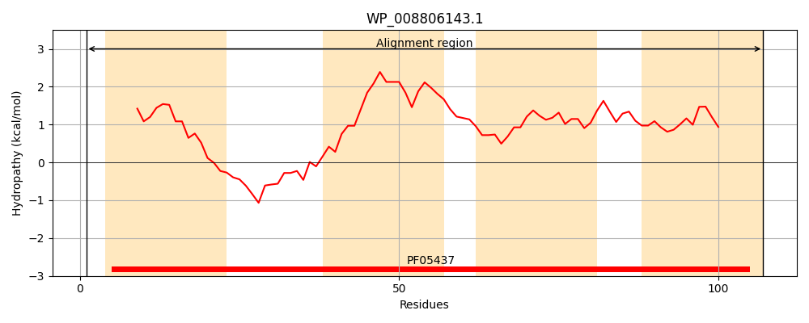
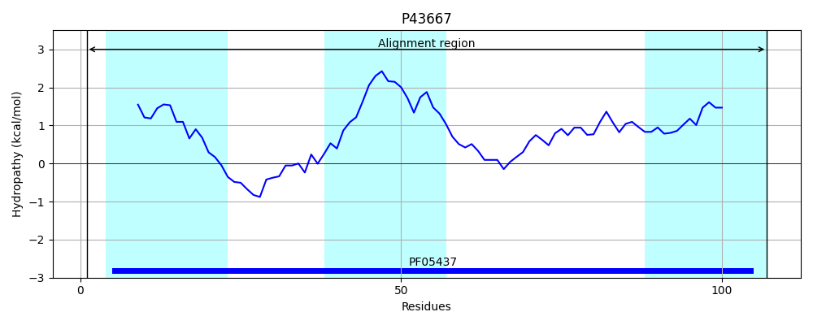
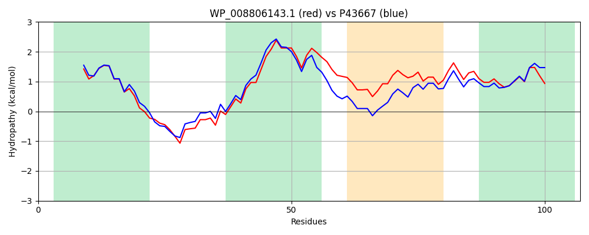

Hit Accession: P43667
Hit TCID: 2.A.78.1.3
Hit Description: gnl|BL_ORD_ID|10534 gnl|TC-DB|P43667|2.A.78.1.3 Hypothetical protein ygaH - Escherichia coli.
Mach Len: 107
e:0.000000
Query TMS Count : 4
Hit TMS Count: 3
TMS-Overlap Score: 3.000000
Predicted Substrates:CHEBI:6829;methionine
BLAST Alignment:
| Protein Hydropathy Plots: | |
|---|---|
|  |  |
Pairwise Alignment-Hydropathy Plot: | |
|  | |